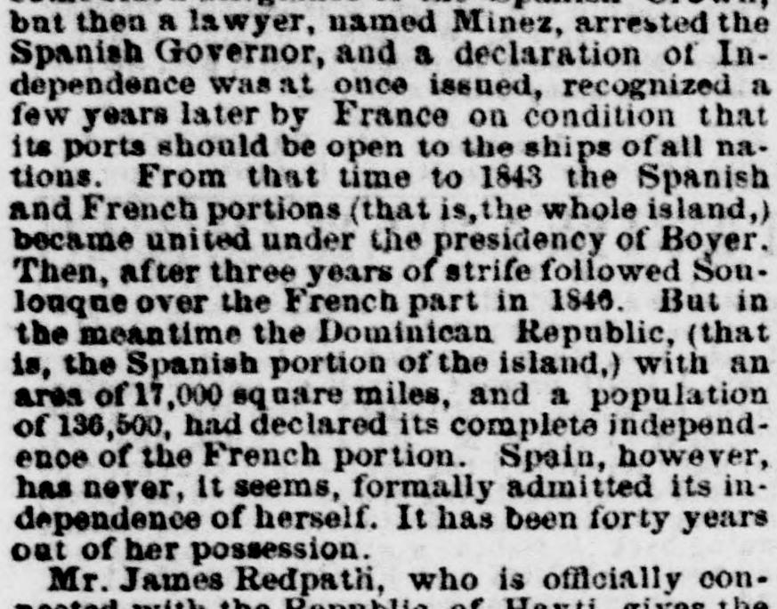
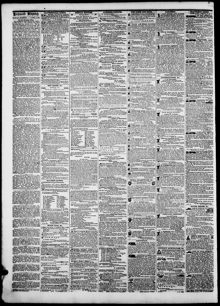

Jamee Redpatii, who i. officially oon- nected with the Republic of HaytiJames Redpath, quien está oficialmente vinculado con la República de
The Daily Dispatch. Richmond [Va.], April 8, 1861. Page 4. View the originalVer el original


See the full pageVer la página completaThe newspaper reported that the Dominican Republic, covering an area of 1,000 square miles with a population of 136,000, declared its complete independence from the French portion, though Spain had never formally admitted its independence after forty years out of its possession. According to Mr. James Redpath, officially connected with the Republic of Hayti, the Dominican Republic has been divided between two alternating parties represented by Santana and Baez, whose policies indicate re-union and independence. Redpath explained that after Santana failed to repay a million-dollar loan borrowed from Spain and offered a mortgage on the custom-houses, a small band of eighty Spaniards arrived in St. Domingo last summer to work as custom collectors and mechanics, which fueled the opposition's revolutionary claims that Santana was selling the country.El periódico informó que la República Dominicana, con una superficie de 1.000 millas cuadradas y una población de 136.000 habitantes, declaró su completa independencia de la porción francesa, aunque España nunca había reconocido formalmente su independencia tras cuarenta años fuera de su dominio. Según el Sr. James Redpath, vinculado oficialmente a la República de Haití, la República Dominicana ha estado dividida entre dos facciones alternantes representadas por Santana y Báez, cuyas directrices apuntaban respectivamente a la anexión y a la independencia. Redpath explicó que, tras no poder Santana amortizar un empréstito de un millón de dólares solicitado a España y ofrecer en garantía las aduanas, un reducido contingente de ochenta españoles llegó a Santo Domingo el verano anterior para ejercer como recaudadores aduaneros y artesanos, lo que avivó las denuncias revolucionarias de la oposición de que Santana vendía la patria.
FULL TEXT:TEXTO COMPLETO:
but then a lawyer, named Minez, arrested the Spanish Governor, and a declaration of Independence was at once issued, recognized a few years later by France on condition that its ports should be open to the ships of all nations. From that time to 1843 the Spanish and French portions (that is, the whole island,) became united under the presidency of Boyer. Then, after three years of strife followed Soulouque over the French part in 1846. But in the meantime the Dominican Republic, (that is, the Spanish portion of the island,) with an area of 17,000 square miles, and a population of 136,500, had declared its complete independence of the French portion. Spain, however, has never, it seems, formally admitted its independence of herself. It has been forty years out of her possession.pero entonces un abogado, llamado Minez, arrestó al Gobernador español, y una declaración de Independencia fue emitida de una vez, reconocida unos años después por Francia con la condición de que sus puertos deberían estar abiertos a los buques de todas las naciones. Desde ese tiempo hasta 1843 las porciones española y francesa (es decir, toda la isla,) se unieron bajo la presidencia de Boyer. Luego, después de tres años de lucha siguió Soulouque sobre la parte francesa en 1846. Pero entretanto la República Dominicana, (es decir, la porción española de la isla,) con un área de 17,000 millas cuadradas, y una población de 136,500, había declarado su independencia completa de la porción francesa. España, sin embargo, nunca, parece, ha admitido formalmente su independencia de sí misma. Ha estado cuarenta años fuera de su posesión.
Mr. James Redpath, who is officially con-El Sr. James Redpath, quien está oficialmente con-
[Editor's note: the paper writes of the east as part of Hayti. From 1822 to 1844 the Dominican Republic was held by Haitian military occupation, against its people's will; it restored its independence on February 27, 1844.][Nota del editor: el periódico habla del este como parte de Haití. De 1822 a 1844 la República Dominicana estuvo bajo ocupación militar haitiana, contra la voluntad de su pueblo; restauró su independencia el 27 de febrero de 1844.]